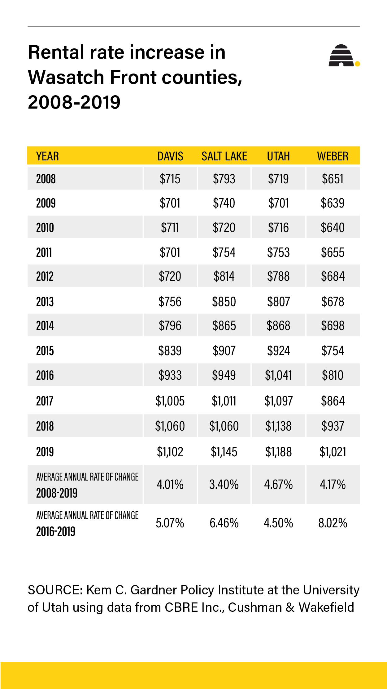

Student-age Utahn's Housing Struggles
By Adam Evans
Katy Hacking, age 20, lives in a 770 square-foot, one bedroom apartment in West Jordan. She’s lived here for just over a year with her two cats. She moved here last year when Covid sent her home from college. At the same time, her parents were divorcing. “I really didn't want to deal with all the hassle so I moved out on my own.” she told me. Soon she will be moving elsewhere. “I don't need a bigger place necessarily, though that would be nice, just somewhere closer to work maybe” we both sit in a small, sunny living room lined with cat toys and the odd bit of fur. Katy’s rent for the last year has been at 950/month, but with her lease being up, the new rate is 1250/month. “It's just that [the] market rate has gone up, which means everywhere else is charging more too. It's just capitalism.” She’s told me the new place she’s looking at moving to has a going rate similar to what she currently pays.
Many Utahns have had to deal with rent increasing lately. Deseret News reports “Salt Lake County’s rental rates rose 78%” and is corroborated by the University of Utah’s gardener institute “Over the past five years, the number of new dwelling units in Utah has averaged 21,150 units, about 75% of the number required to meet the annual demand.” (Deseret News- The Renter’s Dilemma, University of Utah- Housing Affordability) This suggests the reason for the rent increases is a lack of supply and high demand. Growth and changes in the market are fairly normal and expected, especially for a growing state like Utah. However, the issue is more than a simple supply/demand problem. It’s more tangled up in the State’s economics than anything else. The Salt Lake Tribune spoke with housing economist David Fields, who pointed out “We can’t build our way out of this.” While Utah’s economy has expanded, the average household income has stayed pretty flat since 2002. (Salt Lake Tribune- What’s Driving Utah’s Housing Crisis?)
As we chatted during a breezy summer afternoon, Katy told me more about her experience in Utah’s housing market. “When I was in fourth grade we lived in a two bedroom apartment in The District... The rent there was $1100 a month. Minimum wage has certainly not gone up at all since then but that same exact floor plan is now in the range of $1700.” Katy was 10 in 2010. As she mentions this I recall my family used to live in a 2-bedroom apartment near Redwood. The rent back in 2010? 700 a month according to my parents. Now, the same unit goes for at least 1300, double what it was. This is evident in the chart to the right, which shows the current trends for rent increase compared to income and inflation. For Utahns in situations like Katy’s, the price squeeze comes with a need to sacrifice/postpone other goals and aspirations in life. The Deseret news notes “1 in 5 Utah renters are considered ‘severely cost-burdened,’ meaning they pay more than 50% of their income on rent” (Deseret News- The Renter’s Dilemma) Katy tells me that she spends usually around 70-80% of her income on just her apartment and related bills like utilities. The biggest struggle for Katy is that she’s had to give up college for the moment. “I definitely am not making enough to afford tuition.” she said with a solemn smile. Meanwhile, just outside her window, the SLCC Jordan campus can be seen in the distance. For other Utahns, school might not be an issue, but anything unexpected can be crippling. “a medical event, auto accident, domestic violence, you know, [and] they’re just in big trouble.” (John Wood, Salt Lake Tribune)
So what could be done about this massive housing crisis that’s affecting pretty much everyone on the Wasatch Front? The Gardener Institute has a section of their housing report dedicated to observations from around the world on how we could solve our housing issues. One example was Copenhagen in Denmark. Copenhagen faced a housing crisis in the 90’s akin to what we have in Utah currently. The study notes that they initiated a program to find underutilized land and property in the city. The city then rezoned and redeveloped these areas into more useful projects that generated revenue for the city to use elsewhere. (University of Utah Gardener Institute). For Utah, this could mean finding unused patches in neighborhoods, or even redeveloping unused portions of property to create communities that would more efficiently serve their areas and give back revenue to the city rather than taking it. Such solutions would not only ease our housing issues, but potentially have benefits for our environment, economy, and general society.
Unfortunately, for my friend Katy, and many other Utahns, such solutions will take time, especially considering setbacks or government obstructions. As our chat comes to a close, one of Katy’s cats starts rubbing against my leg purring. Katy tells me she has to get to work, after all she has to pay for her apartment. I quickly finish up my notes, thank her for allowing me some of her scarce time, and leave with a hug goodbye.